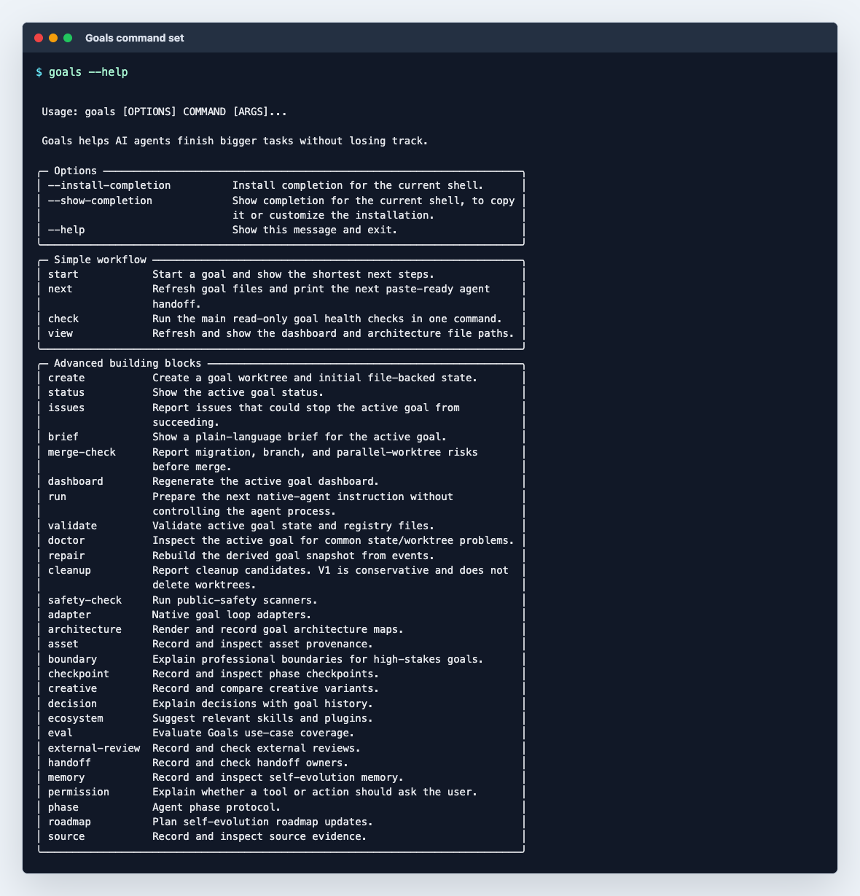
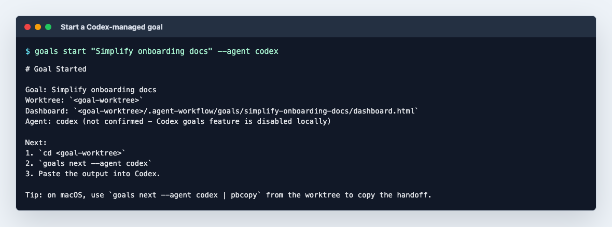
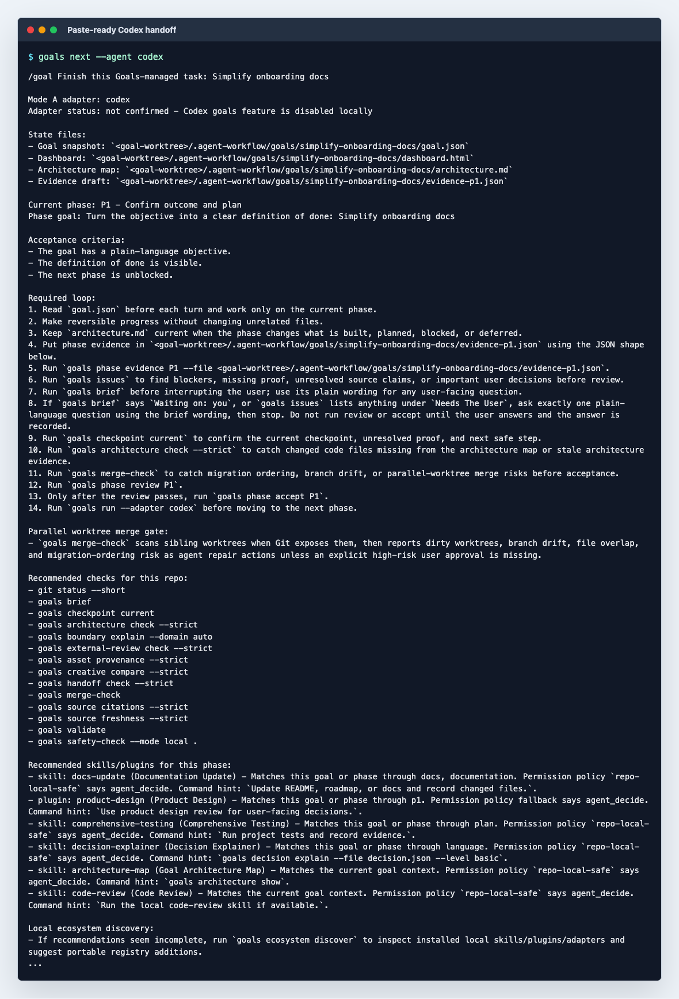
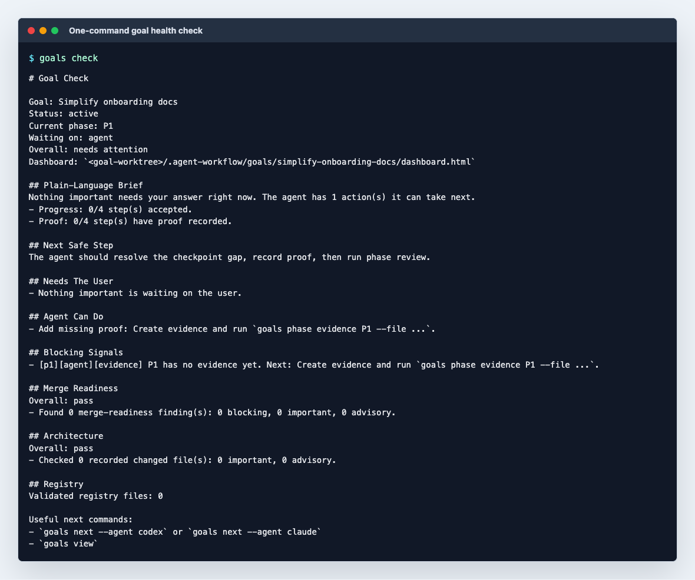
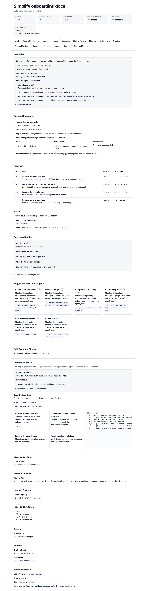

The Four Commands
goals start
Creates the goal worktree, state files, dashboard, and first next step.
goals next
Refreshes generated files and prints the paste-ready agent handoff.
goals check
Combines the brief, checkpoint, issues, merge, architecture, and registry checks.
goals view
Refreshes the dashboard and architecture map, then prints their paths.
Install Once
uv tool install --editable .
This puts goals on PATH, which is the command the generated
handoffs ask Codex and Claude to run inside your project worktree.
Use With Codex
goals start "Ship the onboarding cleanup" --agent codex
cd <worktree printed by goals>
goals next --agent codex | pbcopyPaste the copied output into Codex. If Codex's native goal feature is not enabled, paste the prompt into the current Codex thread and keep Goals as the state layer.
Use With Claude Code
goals start "Ship the onboarding cleanup" --agent claude
cd <worktree printed by goals>
goals next --agent claude | pbcopyPaste the copied output into Claude Code. Goals generates the handoff even when the local adapter is not detected, so the workflow remains copyable.
During The Run
goals check
goals view
goals next --agent codex | pbcopy
goals next --agent claude | pbcopygoals check before interrupting the user. It separates
what needs the user from what the agent can repair alone.
Screenshots





Extensibility
The simple commands are orchestration, not a closed system. Add new user
workflows in src/goals/workflows.py, keep CLI wiring thin in
src/goals/cli.py, and add reusable domain behavior in focused
modules under src/goals/.
Registries under registries/*.yml keep adapters, plugins,
skills, permissions, and profiles portable. The advanced command groups
remain available for agents and scripts.